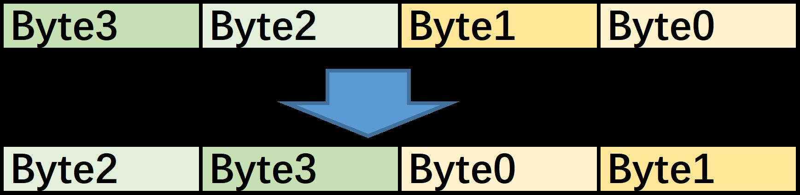
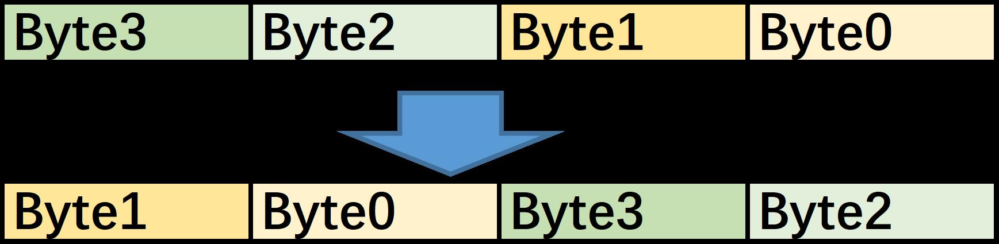
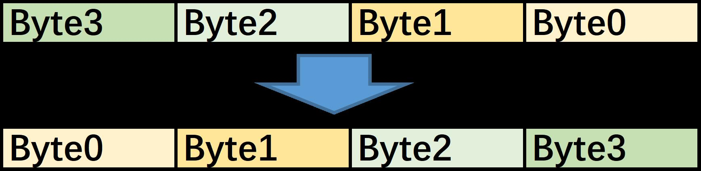
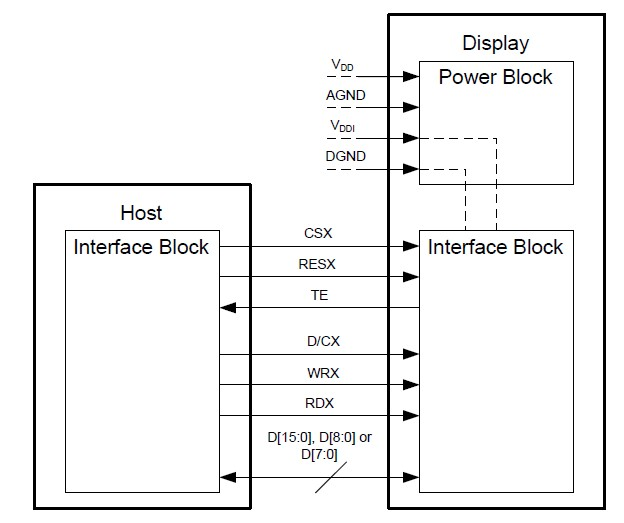
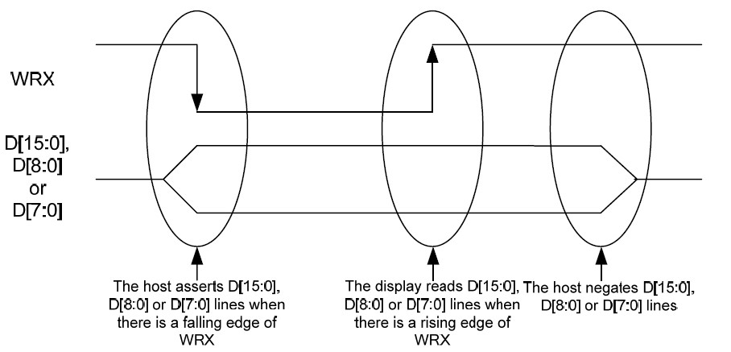
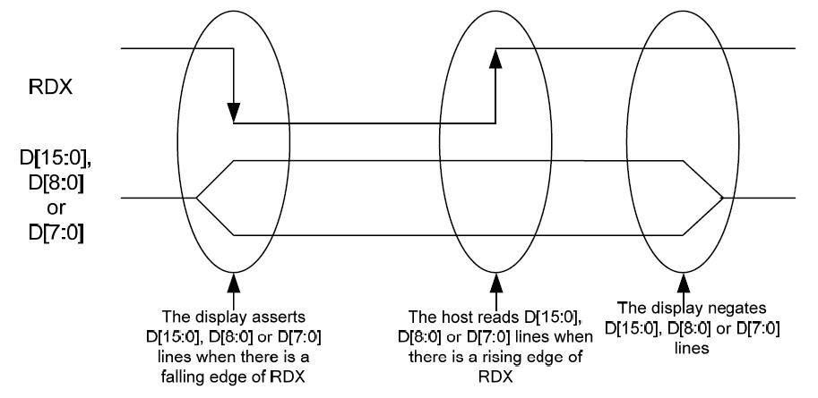
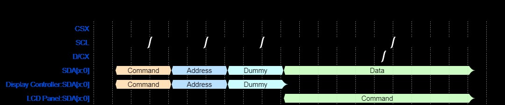
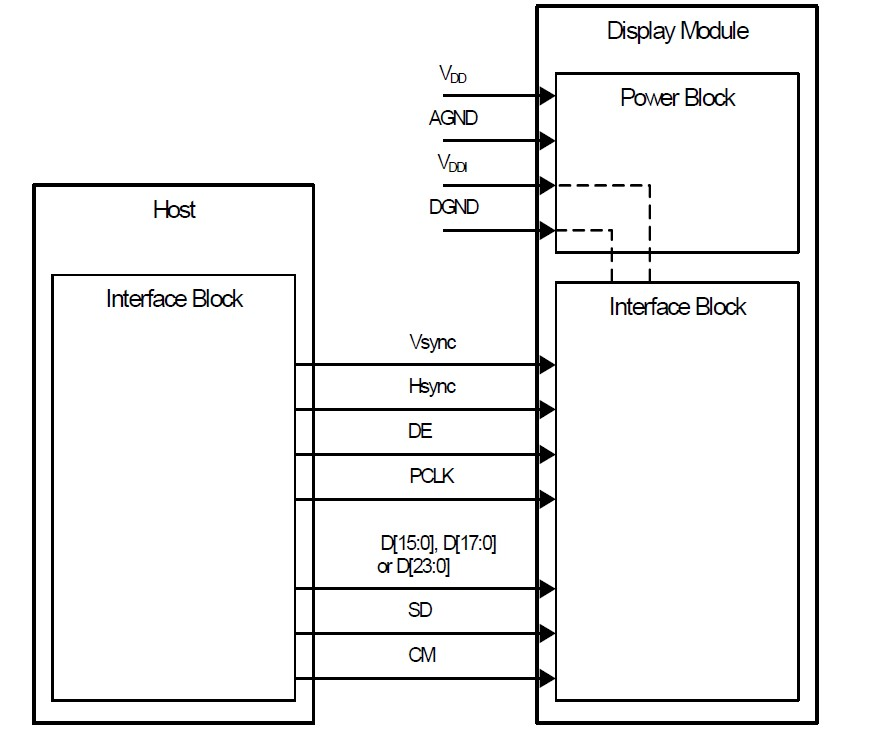
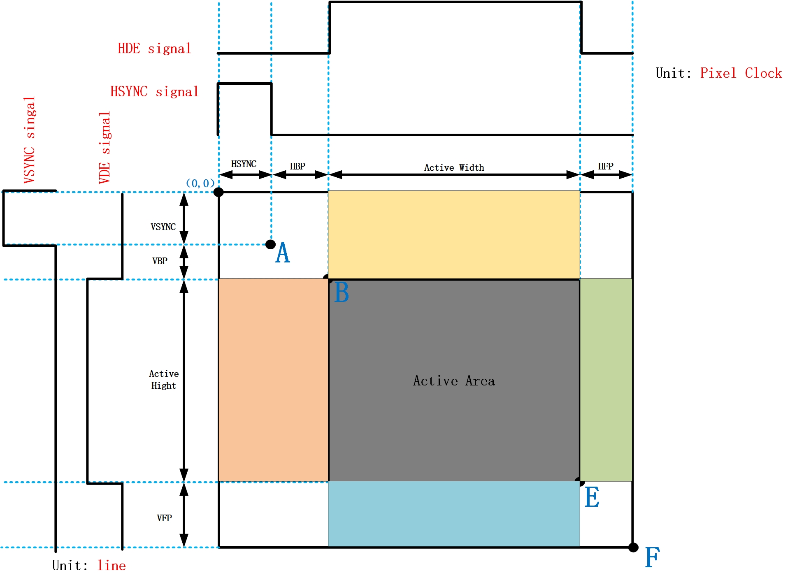
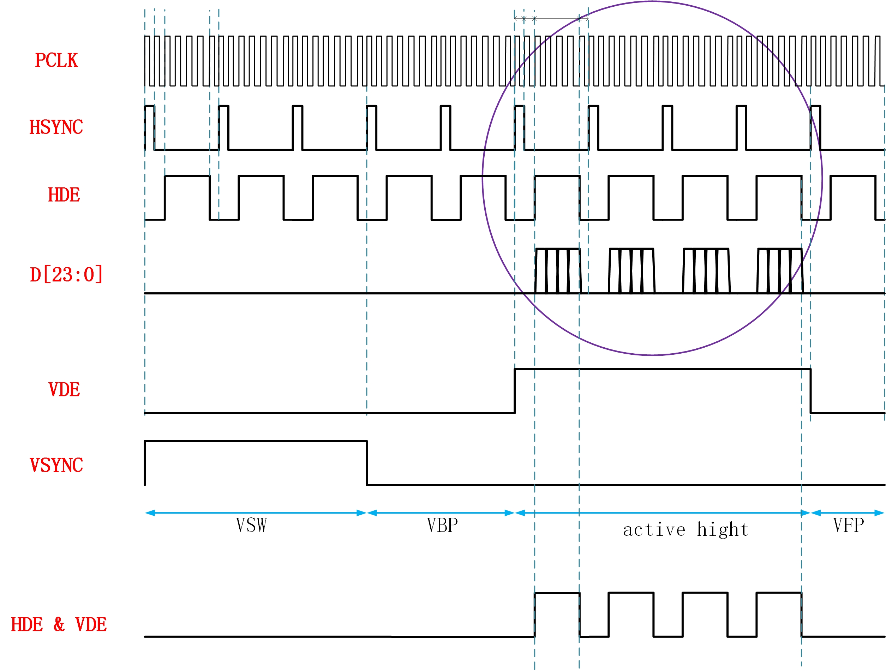

LCDC
示例列表
本章介绍 LCDC 示例代码的详细信息。RTL87x2G系列为LCDC外设提供以下示例。
功能概述
LCDC可以提供各种显示接口支持，用于驱动LCD面板。它内置RGB转换器，可提供像素RGB格式转换功能。支持的接口包括 SDI 、 DBI-B 和 DPI 。LCDC集成了一个内部 DMA ，可加速从存储空间到LCD面板的像素传输。
特性列表
内置DMA。
支持SDI接口和无RAM的SDI面板。
支持DBI-B接口。
支持DPI接口。
内部RGB格式转换器。
支持字节交换。
支持撕裂信号。
内部FIFO深度：128。
内部FIFO宽度：32位。
内部DMA
LCDC中嵌入了一个简化的DMA，用于加速从内存到内部FIFO的像素数据传输过程。内部DMA仅包含一个通道，由LCDC承担流控制器的角色，而不是DMA本身。
根据用户需求，DMA的源地址可以是递增的或固定的，但目标地址固定为LCDC的内部FIFO。
内部DMA支持single block模式、multi-block模式和linklist。
字节交换
在像素格式转换器之前支持字节交换，可以改变字节的位置。
8位交换
{kind=link}

8位交换规则
16位交换
{kind=link}

16位交换规则
8位和16位交换的组合
{kind=link}

8位和16位交换组合规则
像素格式转换器
LCDC支持RGB565、ARGB8888、RGB888、BGR565和ABGR8888的输入像素格式。
LCDC支持RGB565、RGB888、BGR565和BGR888的输出像素格式。
撕裂效应
LCDC支持TE信号，可以同步主处理器和LCD面板之间的数据传输。撕裂信号将由command模式接口（如DBI-B或SDI）的LCD面板生成。当LCDC检测到撕裂信号的有效边缘时，它会通过选定的接口触发数据输出。
下图演示了TE信号处理的工作流程，深色方块中的操作应由用户手动实现，其他步骤由LCDC自动实现。

TE信号处理工作流程
DBI-B
DBI-B定义了符合MIPI规范的主处理器和显示模块之间的电路和逻辑接口。
DBI-B接口的框图如下所示：
{kind=link}

DBI-B接口框图
CSX信号表示写入过程或读取过程正在进行。RESX信号用于重置显示模块。TE信号是来自显示模块的帧同步信号。D/CX信号表示数据总线中传输的是数据还是命令。WRX是主机写入时钟信号，而RDX是主机读取时钟信号。D[7:0]是一个字节宽度的数据总线。
在写入周期中，主处理器通过接口向显示模块写入命令或数据。主处理器在WRX的下降沿写入D[7:0]，显示模块在WRX的上升沿读取D[7:0]。
{kind=link}

DBI-B写入周期
在读取周期中，主机通过接口从显示模块读取数据。显示模块在RDX的下降沿写入D[7:0]，主处理器在RDX的上升沿读取D[7:0]。
{kind=link}

DBI-B读取周期
SDI
SDI接口基于普通SPI（串行外设接口），并通过总线宽度和额外的控制信号进行扩展。

SDI接口框图
CSX、RESX和DCX与DBI-B中的信号作用相同。SCL是写入周期和读取周期的时钟信号。数据信号宽度和方向可以在特定寄存器中配置。
传输过程
传输过程中有四个阶段，分别是命令(CMD)阶段、地址(ADDR)阶段、dummy字节阶段和数据阶段。每个阶段的数据长度和通道数量可以配置。这些阶段的长度应为字节的整数倍。

SDI传输过程
接收过程
接收过程中有四个阶段，分别是命令(CMD)阶段、地址(ADDR)阶段、dummy阶段和接收数据阶段。CMD、ADDR和数据阶段的长度应为字节的整数倍。Dummy阶段是用于在地址阶段和接收数据阶段之间增加一些延迟，该延迟以SDI接口控制器的源时钟周期而非字节为单位。
{kind=link}

SDI接收过程
使用Ramless QSPI传输数据
Ramless QSPI是为具有SDI接口但不包含GRAM的LCD模块设计的。这种特殊的LCD模块在video模式下工作，VSYNC、VBP和VFP信号被特殊命令组包替代。这样的LCD模块不需要HSYNC、VSYNC和DE信号。传统DPI的video模式信号与无RAM的QSPI接口信号之间的关系如下图所示：

DPI和Ramless QSPI之间的区别
Ramless QSPI的示例帧如下所示：

Ramless QSPI示例帧
DPI
DPI接口定义了符合MIPI规范的主处理器和显示模块之间的电路和逻辑接口。
DPI接口的框图如下所示：
{kind=link}

DPI接口框图
VSYNC信号是发送到显示模块的垂直同步信号，需要在在每2帧之间的垂直同步行加入。而HSYNC信号是发送到显示模块的水平同步信号，在每2行之间的水平同步周期中加入。当向显示模块发送实际像素数据时，DE应设置为有效电平。PCLK表示像素时钟。D[23:0]是从主处理器向显示模块发送数据的数据总线。SD和CM是额外的控制信号，主要用于类型4架构的显示模块。
{kind=link}

DPI帧周期内的信号
DPI的示例传输
DPI接口使用示例参数的传输过程如下所示。
HSW = 1 |
HBP = 1 |
HFP = 1 |
|---|---|---|
VSW = 3 |
VBP = 2 |
VFP = 1 |
有效宽度和高度为4像素。
具有这些参数的DPI接口波形如下所示。
{kind=link}

DPI示例波形
上图圆圈部分中的详细波形如下所示。

DPI行内示例波形
中断
LCDC能够处理多种中断，可以通过CPU的NVIC（嵌套向量中断控制器）或轮询中断状态来处理。当特定事件发生时会触发中断。此外，还可以屏蔽或取消屏蔽中断，并且可以清除中断状态。
LCDC外设支持以下中断。
波形完成中断
当在选定接口中完成整个传输过程或读取过程时，会触发显示控制器波形完成中断。此中断始终表示接口工作过程的结束。
需要注意的是，当使用TE信号触发数据输出时，不会触发此中断。
撕裂触发中断
当LCDC检测到有效的TE信号边缘时，会触发此中断。
传输自动完成中断
当寄存器中配置的传输数据的总大小已传输到显示模块时，会触发传输自动完成中断。
RX FIFO溢出中断
当接收过程中内部FIFO溢出时，会触发RX FIFO溢出中断。
TX FIFO空中断
当传输过程中内部FIFO已空时，会触发TX FIFO空中断。
TX FIFO溢出中断
当传输过程中内部FIFO溢出时，会触发此中断。
TX FIFO阈值中断
当传输过程中内部FIFO的数据量等于或低于阈值时，会触发TX FIFO阈值中断。
故障排除
LCDC传输挂起
通常LCDC无法完成传输是因为数据不足，导致数据计数器无法达到预设的数据数量。
使用SDI接口时的总线错误
当LCDC处于硬件模式进行数据传输时，SDI不允许用户访问其寄存器。用户必须通过调用API LCDC_AXIMUXMode() 将LCDC切换到软件模式。
See Also
相关 API Reference 请查看：